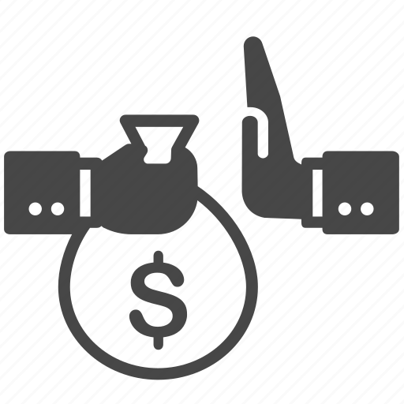

WORLD HAPPINESS REPORT 2021
How Are The People Coping With The Global Pandemic?
The year 2021 has been a year like no other. The world was grip by a global pandemic that still last today. This pandemic highlights the disparity among different countries. For instance, countries with more wealth and resources fared better than poorer countries. This begs the question how happy are people around the world today? Every year The World Happiness Report conducts a worldwide poll to determine the happiness score of a country. The World Happiness Report is written by a group of independent experts and is a publication of the Sustainable Development Solutions Network. This year the reported intent is to focus on the effects of the global pandemic and how people all over the world have fared during these difficult times. Below shows illustration and analysis of the data collected.
Happiness Score Around The World
What Makes A Country Happy?
The world happiness report uses six different variables to reflect what has been broadly found to be important in explaining national-level differences in life evaluations. The six factors used are levels of GDP, life expectancy, generosity, social support, freedom, and corruption are likely to contribute to the Happiness Score of a country. The explanations below are excerpts from Statistical Appendix of World Happiness Report 2021
Logged GPD per Capita
The statistics of GDP per capita in purchasing power parity (PPP) at constant 2017 international dollar prices are from the October 14, 2020 update of the World Development Indicators (WDI).

Social Support
Social support (or having someone to count on in times of trouble) is the national average of the binary responses to the GWP question “If you were in trouble, do you have relatives or friends you can count on to help you whenever you need them, or not?”
Healthy Life Expectancy
Healthy life expectancies at birth are based on the data extracted from the World Health Organization’s (WHO) Global Health Observatory data repository.
Freedom
Freedom to make life choices is the national average of responses to the GWP question “Are you satisfied or dissatisfied with your freedom to choose what you do with your life?”
Generosity
Generosity is the residual of regressing national average of response to the GWP question “Have you donated money to a charity in the past month?” on GDP per capita.

Corruption
Corruption Perception: The measure is the national average of the survey responses to two questions in the GWP: “Is corruption widespread throughout the government or not” and “Is corruption widespread within businesses or not?”
How Generous Are People Today?
It seems the generosity among people greatly decrease compared to the year 2015. The global pandemic had caused a devastating economic and social disruption and made many people fall into hard times and unable to donate to charity.
Sense Of Freedom Throughout The Years
The graph below illustrates the freedom score throughout the year 2015 to 2021. For each region, two countries are chosen to show the comparison of the country's journey all through the years. The country is chosen based on the highest and lowest happiness score of the particular region.
Factors With Positive Correlation With Happiness
After some exploration within the data, the factors with a very distinct positive correlation with the happiness score of the country is Life Expectancy and Corruption. Below are two highly interactive scatter plots that visualize the correlations. It also shows the comparison of the GDP per capita of each country. Filter or highlight different regions to gain more insight by using the selection box and clicking on the legend.
Do You Have Someone To Count On?
The bar graph below displays each countrys' social support score. The dashed line indicates the world average social score. Countries with below-average social scores are highlighted. Drag the Year slider to see the social support score of the world throughout the year 2018 - 2021. Note that some countries like Romania and Greece manage to score above the global average in later years. Furthermore, countries in the Sub-Saharan Africa is more likely to be below the world average.